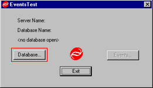
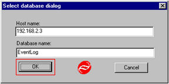
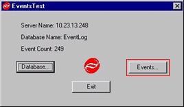
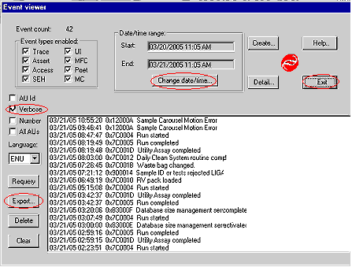
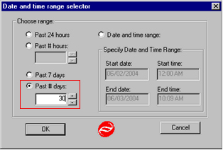
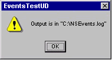

Using Events Test to Copy Event Log Files This procedure describes how to copy the Event Log as a text file for easier transmission of the data to Tech Support. Use the EventsTest Method to save event log files to the PC. From the console PC (either locally or through PROService remote connection), For Windows XP, select Start > Programs > Nexgen (or Access2) > EventsTestUD. For Windows 8, press Windows key and select EventsTest application icon. Select the Database button to open the EventBase database.  Select the OK button on the Select database pop-up.  Select Events on the EventsTest pop-up.  Select Change date/time on the Event Viewer.  Select the [Past # days:] option, and enter 30 days. Select OK. The Event List displays the events for the past 30 days.  Select Export on the left side of the Event Viewer. Select OK.  Open Windows Explorer or File Explorer and scroll through the C:\ drive on the right side of the screen to find the C:\NSEvents.log file. Rename the file Serial#_Events_Terse_YYYYMMDD. Example: 600209_Events_Terse_20060630 Return to the Event Viewer. Select the Verbose option, and then select the Export… button. Open Windows Explorer or File Explorer, and scroll through the C:\ drive on the right side of the screen to find the C:\NSEvents.log file. Rename the file Serial#_Events_Verbose_YYYYMMDD Example: 600209_Events_Verbose_20060630 Exit EventsTestUD. Close Windows Explorer or File Explorer. Parent Topic: DatabaseHome10 Software 10.10 Troubleshooting10.10.1 Database10.10.1.10 Using Events Test to Copy Event Log Files
Using Events Test to Copy Event Log Files This procedure describes how to copy the Event Log as a text file for easier transmission of the data to Tech Support. Use the EventsTest Method to save event log files to the PC. From the console PC (either locally or through PROService remote connection), For Windows XP, select Start > Programs > Nexgen (or Access2) > EventsTestUD. For Windows 8, press Windows key and select EventsTest application icon. Select the Database button to open the EventBase database. Select the OK button on the Select database pop-up. Select Events on the EventsTest pop-up. Select Change date/time on the Event Viewer. Select the [Past # days:] option, and enter 30 days. Select OK. The Event List displays the events for the past 30 days. Select Export on the left side of the Event Viewer. Select OK. Open Windows Explorer or File Explorer and scroll through the C:\ drive on the right side of the screen to find the C:\NSEvents.log file. Rename the file Serial#_Events_Terse_YYYYMMDD. Example: 600209_Events_Terse_20060630 Return to the Event Viewer. Select the Verbose option, and then select the Export… button. Open Windows Explorer or File Explorer, and scroll through the C:\ drive on the right side of the screen to find the C:\NSEvents.log file. Rename the file Serial#_Events_Verbose_YYYYMMDD Example: 600209_Events_Verbose_20060630 Exit EventsTestUD. Close Windows Explorer or File Explorer. Parent Topic: DatabaseHome10 Software 10.10 Troubleshooting10.10.1 Database10.10.1.10 Using Events Test to Copy Event Log Files